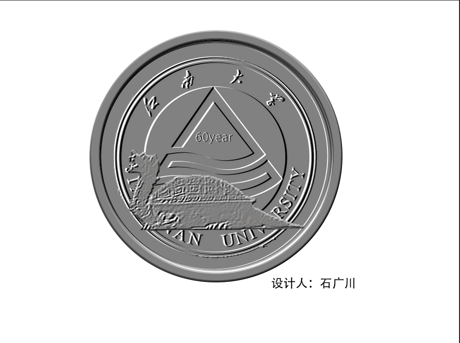

1.实验目的
(1)学会在图像中选取区域。
(2)学会图像的变换。
(3)掌握蒙板、通道的功能及用法。
(4)学会为图层设置效果层制作立体效果。
(5)学会用滤镜制作特殊效果。
2.实验内容
(1)建立一个新文件，制作奥运五环标志。
(2)选取作为北京标志的天坛图像素材。
(3)合成图片并制作浮雕效果。
(4)使用滤镜制作艺术字。
(5)合成一枚奥运纪念币。
3.实验步骤
1.建立一个新文件，制作奥运五环标志
(1)选择“开始”→“程序”→Adobe Photoshop，打开Photoshop程序界面。
(2)执行“文件”→“新建”命令，建立一个新文件。新文件名为Olympic，高和宽均为10cm，分辨率为72ppi，RGB色彩模式，背景为白色。
(3)执行“视图”→“显示标尺”命令，将鼠标从标尺上拖拽到图像区域，建立参考线。
(4)执行“视图”→“对齐到”→“参考线”命令，从工具箱中选用圆形选区工具，按住Shift+Alt 键在参考线交点处单击并拖拉制作一个圆形选区。
(5)执行“选择”→“存储选区”命令，将选区存储为Alpha 1通道。
(6)按Ctrl+D键或执行“选择”→“取消选区”命令取消选区浮动。
(7)重复步骤4、步骤5，建立一个稍大些的圆形选区并存储为AIpha 2通道。
(8)保持大的圆选区浮动，执行“选择”→“载入选区”命令，设置为将Alpha l通道从选区中减去，然后单击“好”按钮形成一个圆环状选区。
(9)存储圆环状选区为Alpha 3通道。
(10)执行“视图”→“显示通道”命令，打开通道控制面板，可查看通过以上步骤建立的三个选区通道。
(11)执行“视图”→“隐藏标尺”命令和“视图”→“清除参考线”命令，隐藏标尺和清除参考线。
(12)在图层控制面板中，单击下部的“建立新图层”图标，建立图层1。
设置工具箱中的色彩控制图标的前景色为黑色，执行“编辑”→“填充”命令，填充前景色，在图层1中建立一个黑色圆环。
(13)用选区工具拖移圆环选区或多次按压键盘上的向左光标键，使圆环选区向左侧移动。
(14)在图层控制面板中新建图层2，单击前景色图标，选择RGB色彩，并设置R、G、B分别为0、255、255，为圆环填充蓝色。
(15)同理建立图层3、图层4、图层5，分别生成红色、黄色、绿色圆环，如图E2.9所示。红黄绿色的RGB值分别为255、0、O，255、255、O，0、255、0。
(16)执行“选择”→“取消选区”命令或按Ctrl+D键，取消选区浮动。
提示：由于奥运五环为互相圈套，因此必须对上述生成的图像进行修改。
(17)在控制面板中选中图层1，链接图层2、图层3，执行“合并链接图层”命令，使图居1、2、3合并为图层1；选中图层4，链接图层5，执行“合并链接图层”命令，使图层4、5合并为图层4。
(18)选择图层4，单击图层控制面板下部的“添加白色蒙板”图标，为图层4建立白色蒙板。
(19)设置前景色为黑色，选用毛笔工具，在图像中圆环相交的地方根据需要进行涂抹，生成互相嵌套的奥运五环标志。
(20)执行“向下合并图层”命令，使图层1、4合并为图层1，保存该文件。
2.选择天坛图像
(1)执行“文件”→“打开”命令，打开天坛图片文件（实验2素材\ tiantan.jpg）。
(2)用磁性套索工具沿建筑物外形移动，制作建筑物选区。如对制作的选区不满意，可单击显示模式的快速蒙板图标，进入快速蒙板状态，用毛笔工具涂抹以修改选区至满意为止。
(3)执行“编辑”→“复制”命令。
3.合成图片
(1)单击工具箱中的色彩控制图标，设置背景色为蓝色。
(2)执行“文件”→“新建”命令，建立一个新文件。新文件名为Currency，高、宽均为10cm，分辨率为72ppi，RGB色彩模式，背景为背景色颜色。
(3)执行“编辑”→“粘贴”命令，将天坛建筑物选区图像粘贴到Currency文件中，由于图像太大，执行“编辑”→“变换”→“缩放”命令，将图像缩小至合适大小。注意观察图层控制面板中的粘贴图像占据一个独立的图层1。
(4)在Olympic文件中，按住Ctrl键同时单击图层控制面板中的图层1(五环图层)，选择五环选区。
(5)按住Alt键，使用移动工具拖拽五环选区图像到Currency文件中，占据图层2。执行“编辑”→“变换”→“缩放”命令，将图像缩小。
(6)执行“文件”→“保存”命令，保存该合成图像文件。
(7)选择图层1，执行“滤镜”→“风格化”→“浮雕”命令，使建筑物产生浮雕效果。
(8)对图层2中的五环执行“图层”→“图层样式”→“斜面和浮雕”命令。
(9)在图层控制面板中将背景层拖拽到控制面板下部的“新增图层”上，将背景层复制为“背景层副本”。
(10)对背景层副本执行“滤镜”→“杂色”→“添加杂色”命令。
(11)继续为背景层副本执行“滤镜”→“模糊”→“高斯模糊”命令。
(12)使用圆形选区工具并按Shift键在背景副本层画一个正圆选区。保持选区浮动，执行“选择”→“反选”命令，然后按Delete键删除反选区图像，形成一个圆形图案。
(13)沿圆形图案边缘制作一个环形选区。
(14)执行“图层”→“图层样式”命令，应用“斜面和浮雕”命令对该层制作立体效果。
(15)合并图层1、图层2、背景层副本为一个图层，保存文件。
4.制作立体字
(1)新建文件，取名为“Text”。
(2)选用文字工具，在图像窗中单击，弹出文字对话框，进行字体、大小等设置并在文字框中写入文字。
(3)执行“选择”→“全选”命令，接着执行“图层”→“对齐”命令，设置水平居中对齐、垂直居中对齐。
(4)执行“图层”→“栅格化”→“文字”命令，将文字层转化为普通图层。
(5)执行“滤镜”→“扭曲”→“极坐标”命令。
(6)按Alt键将文字图像拖入Currency文件中，调整其位置。
(7)合并图层，保存该文件。
我的作品

©石广川